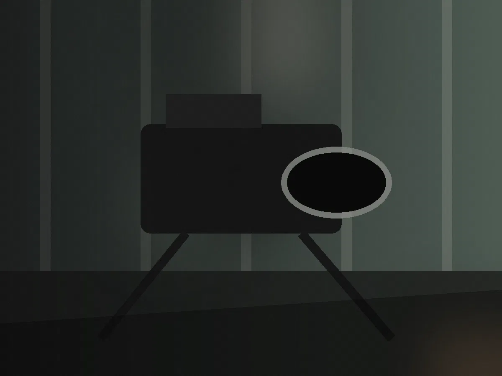
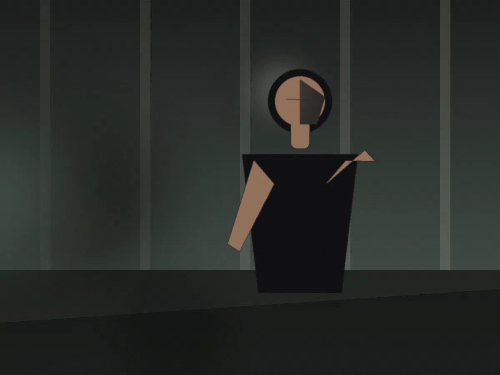
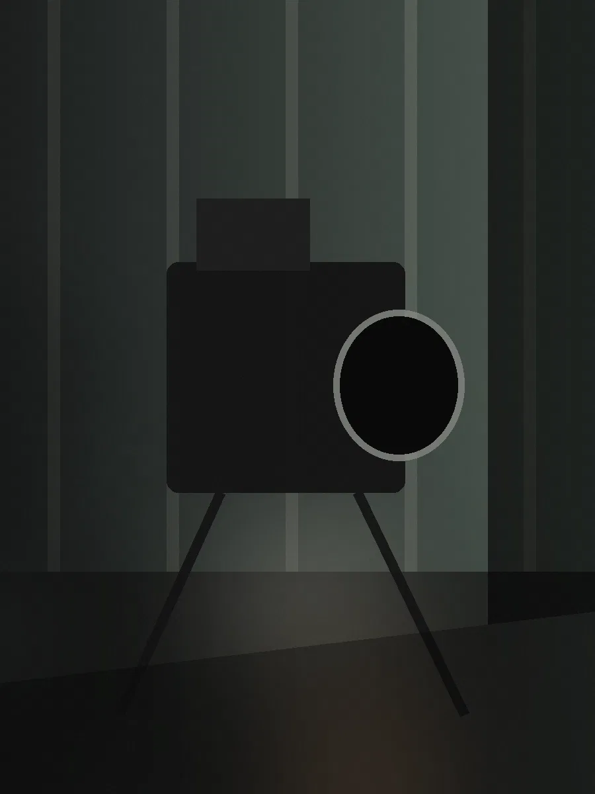
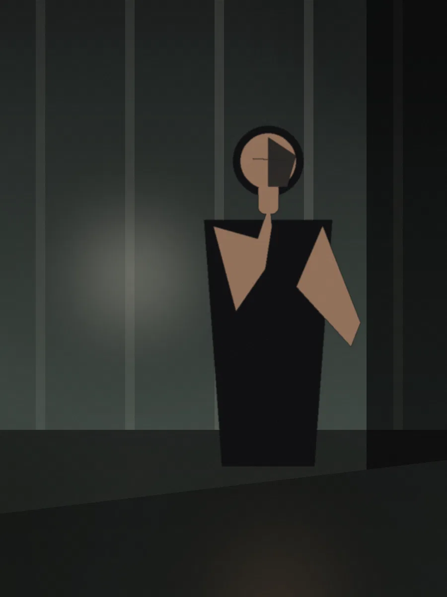
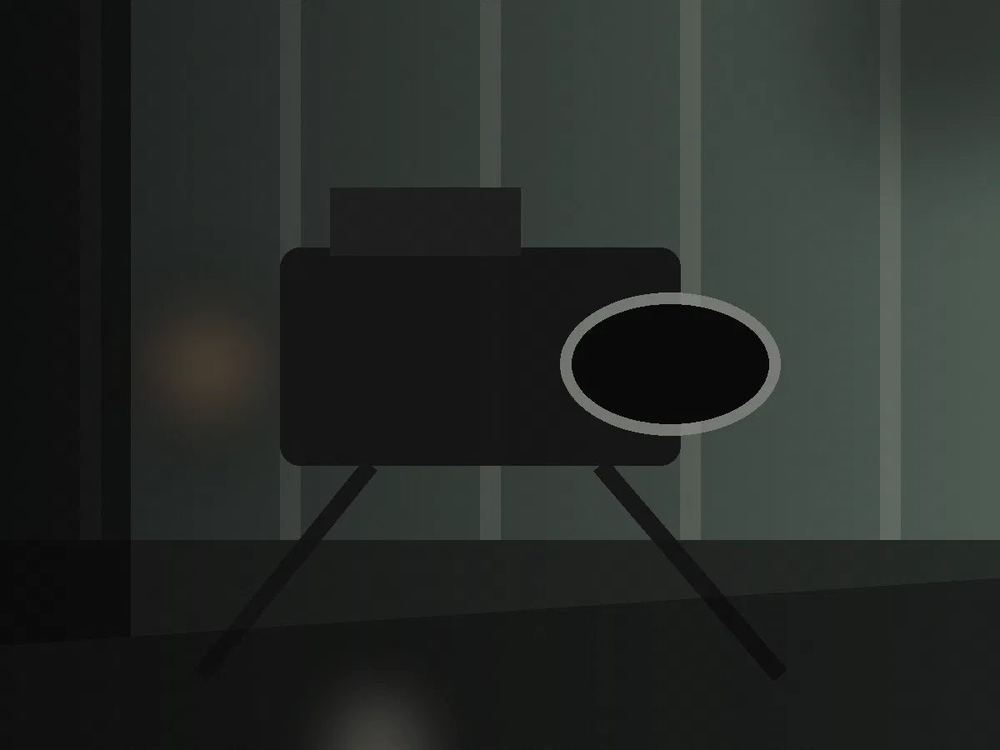
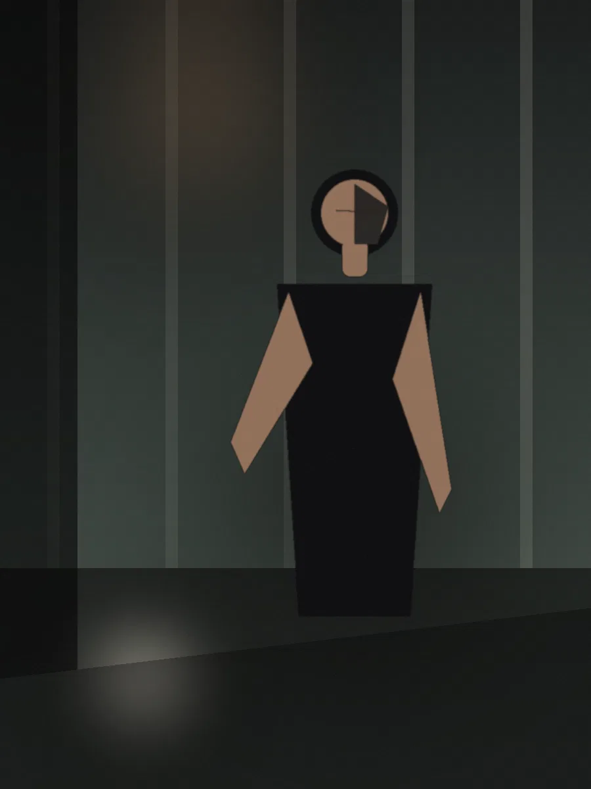

Observed
A documentary frame should reveal before it explains. The goal is specificity: enough human truth that the viewer begins asking the question on their own.
Placeholder assignment
Let the subject remain a person.
The danger in documentary and interview work is reducing someone to the point being made about them. The visual strategy here leaves room for contradiction: environment, pauses, objects, empty frames, glances, and moments before or after the expected answer.
“The frame doesn't need to tell us everything. It needs to make us care enough to stay.”
In the real project, this space can hold one fragment of interview transcript, field note, or contextual sentence. It should deepen the person, not decorate the page with fake profundity.



Human → environment → process → absence → return to human. The cut can change what an image means without changing the image itself.

